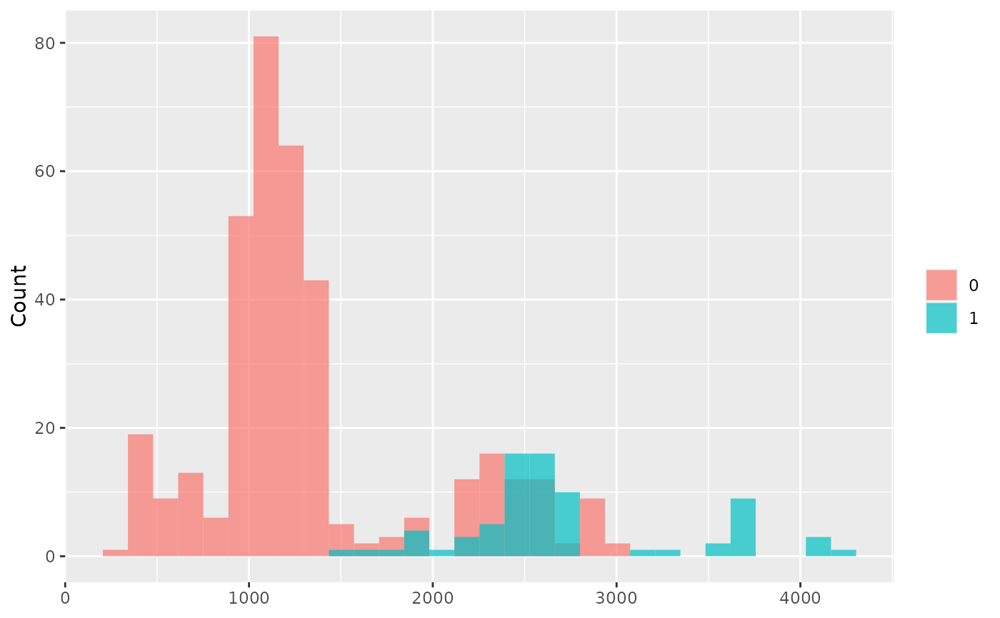

Plots a histogram of Individual Conditional Average Treatment effects (ICATE). ICATEs are the difference in each individual's predicted outcome under the treatment and predicted outcome under the control averaged over the individual. Plots of ICATEs are useful to identify potential heterogeneous treatment effects between different individuals. ICATE plots can be grouped by discrete variables.
Arguments
- .model
a model produced by `bartCause::bartc()`
- .group_by
a grouping variable as a vector
- n_bins
number of bins
- .alpha
transparency of histograms
Examples
# \donttest{
data(lalonde)
confounders <- c('age', 'educ', 'black', 'hisp', 'married', 'nodegr')
model_results <- bartCause::bartc(
response = lalonde[['re78']],
treatment = lalonde[['treat']],
confounders = as.matrix(lalonde[, confounders]),
estimand = 'ate',
commonSup.rule = 'none'
)
#> fitting treatment model via method 'bart'
#> fitting response model via method 'bart'
plot_ICATE(model_results, lalonde$married)

# }